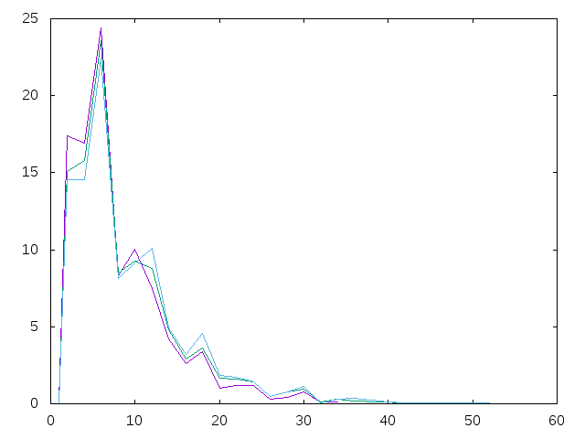

Los 15 primeros números primos son
2, 3, 5, 7, 11, 13, 17, 19, 23, 29, 31, 37, 41, 43, 47
Las distancias entre los elementos consecutivos son
1, 2, 2, 4, 2, 4, 2, 4, 6, 2, 6, 4, 2, 4
La distribución de las distancias es
(1,1), (2,6), (4,5), (6,2)
(es decir, el 1 aparece una vez, el 2 aparece 6 veces, etc.) La frecuencia de las distancias es
(1,7.142857), (2,42.857143), (4,35.714287), (6,14.285714)
(es decir, el 1 aparece el 7.142857%, el 2 el 42.857143% etc.)
Definir las funciones
cuentaDistancias :: Int -> [(Int,Int)]
frecuenciasDistancias :: Int -> [(Int,Float)]
graficas :: [Int] -> IO ()
distanciasMasFrecuentes :: Int -> [Int]
tales que
- (cuentaDistancias n) es la distribución de distancias entre los n primeros primos consecutivos. Por ejemplo,
λ> cuentaDistancias 15
[(1,1),(2,6),(4,5),(6,2)]
λ> cuentaDistancias 100
[(1,1),(2,25),(4,26),(6,25),(8,7),(10,7),(12,4),(14,3),(18,1)]
- (frecuenciasDistancias n) es la frecuencia de distancias entre los n primeros primos consecutivos. Por ejemplo,
λ> frecuenciasDistancias 15
[(1,7.142857),(2,42.857143),(4,35.714287),(6,14.285714)]
λ> frecuenciasDistancias 30
[(1,3.4482758),(2,34.482758),(4,34.482758),(6,24.137932),(8,3.4482758)]
- (graficas ns) dibuja las gráficas de (frecuenciasDistancias k) para k en ns. Por ejemplo,
(graficas [10,20,30]) dibuja

(graficas [x*10^3 | x <- [1,2,3]]) dibuja

y (graficas [x*10^5 | x <- [1,2,3]]) dibuja

- (distanciasMasFrecuentes n) es la lista de las distancias más frecuentes entre los elementos consecutivos de la lista de los n primeros primos. Por ejemplo,
distanciasMasFrecuentes 15 == [2]
distanciasMasFrecuentes 26 == [2,4]
distanciasMasFrecuentes 32 == [4]
distanciasMasFrecuentes 41 == [2,4,6]
distanciasMasFrecuentes 77 == [6]
distanciasMasFrecuentes 160 == [4,6]
Comprobar con QuickCheck si para todo n > 160 se verifica que (distanciasMasFrecuentes n) es [6].
Leer más…